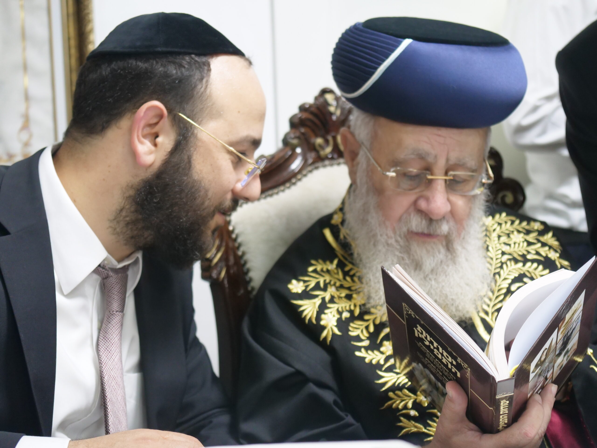
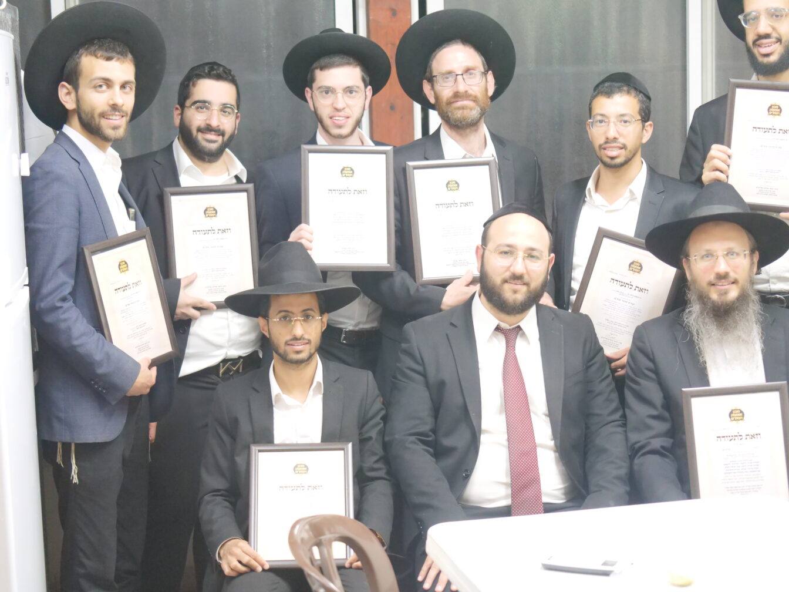
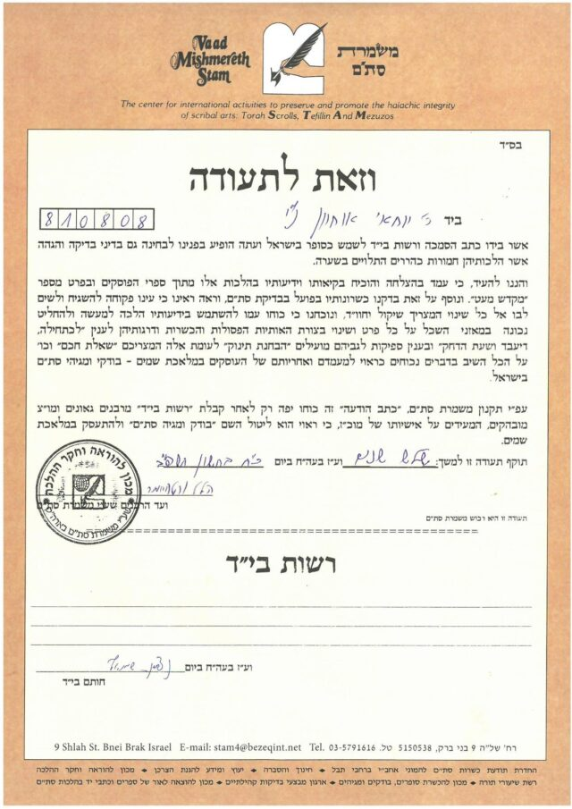
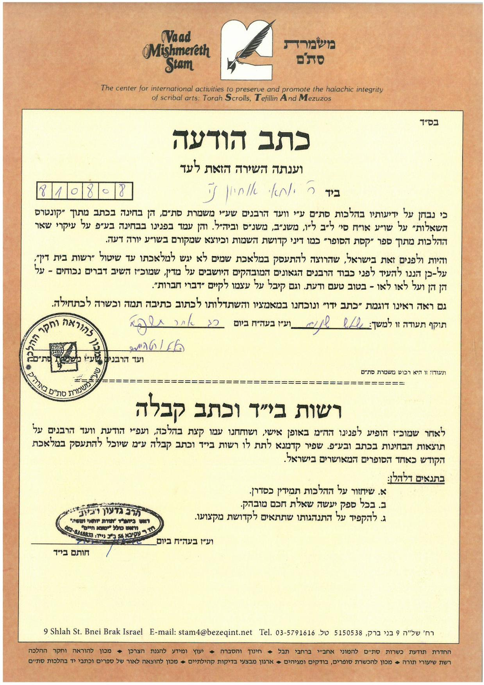
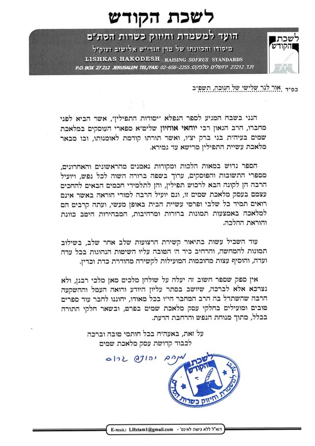
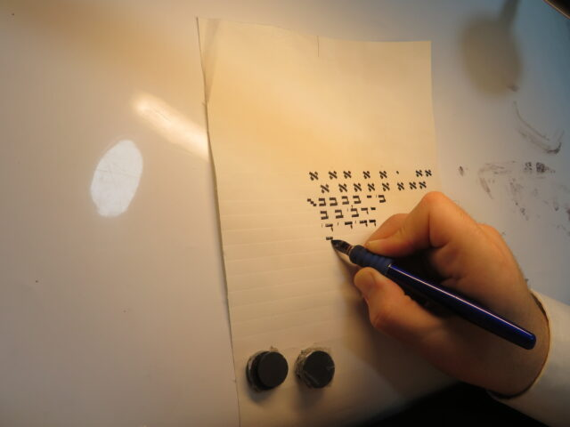
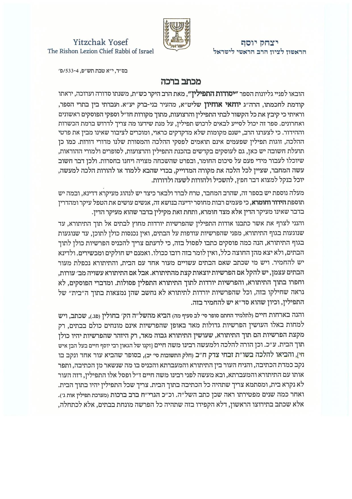
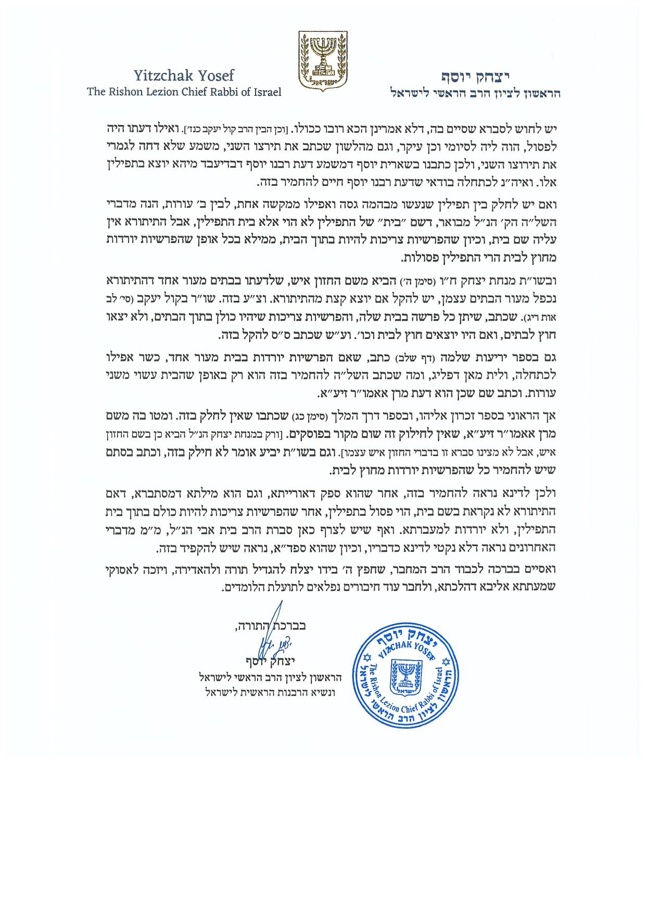

מי אנחנו
הרב משמש כסופר סת"ם, מגיה סת"ם, ומומחה בבתי תפילין ורצועות, מוסמך מטעם משמרת סת"ם ויד רפאל, ובעל כושר מטעם הרבנות הראשית לישראל.
מחבר הספר יסודות התפילין, שהוא ספר הלכתי שלב אחר שלב בעשיית התפילין המלווה בתמונות מרהיבות שצולמו על ידי הרב במפעלי תפילין ברחבי הארץ. כמו כן צילם הרב את קשרי התפילין שלב אחר שלב בתוספת הדרכה לקשירה עצמית, עם הסכמות מהראשון לציון הרב יצחק יוסף שליט"א, הרב שמואל אליעזר שטרן שליט"א, הרב שלמה מועלם שליט"א בעל היריעות שלמה, הרב מנחם גרוס שליט"א ראש לשכת הקודש מבחני הסמכה בירושליים, הרב משה דרעי שליט"א, ועוד.


שמי יוחאי אוחיון ובעזר ה' יתברך זכיתי להיות סופר סת"ם, לפני מספר שנים הרגשתי בקושי של הסופרים המתחילים, ואלו המעונינים להכנס אל הקודש וללמוד מלאכת שמיים את כתיבת הסת"ם, בתחילה יעצתי ועזרתי לסופרים, עד שהחלטתי שצריך לתת מענה מקיף ומקצועי בקורס מסודר, הכולל את כל סודות המקצוע והלכות סת"ם.
בנוסף אני מוסר הרצאות לחיזוק הסת"ם בארץ הקודש, וזכיתי להעביר שיעורים מטעם ארגון 'דרשו' ללימוד ההלכה, וברשת הכוללים 'אליבא דהלכתא' של הרב הרה"ג הרב יעקב הלל שליט"א, בקהילות שונות כוללים ישיבות וקמפים ברחבי הארץ.
השאיפה שלי היא: שכל אדם בן תורה, הרוצה ללמוד מלאכה קודש זו, ולהתפרנס ממנה בכבוד, יוכל לעשות זאת בקלות ובשמחה.אשמח לראות אותך בקורס הקרוב, ושיהיה בהצלחה... יוחאי 053-4177677
הקורסים שמועברים על ידי הרב הם קורסי בוטיק, תוך דגש על קבוצות קטנות וברמה גבוהה בהתאמה לכל אחד ואחד, וביחס אישי.כמו כן הרב מלוה ומסייע לתלמידים בכל מקום שהוא - בארץ ובעולם.





